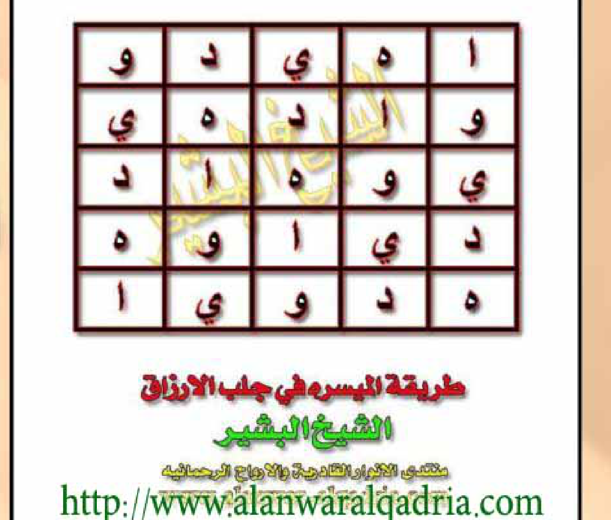
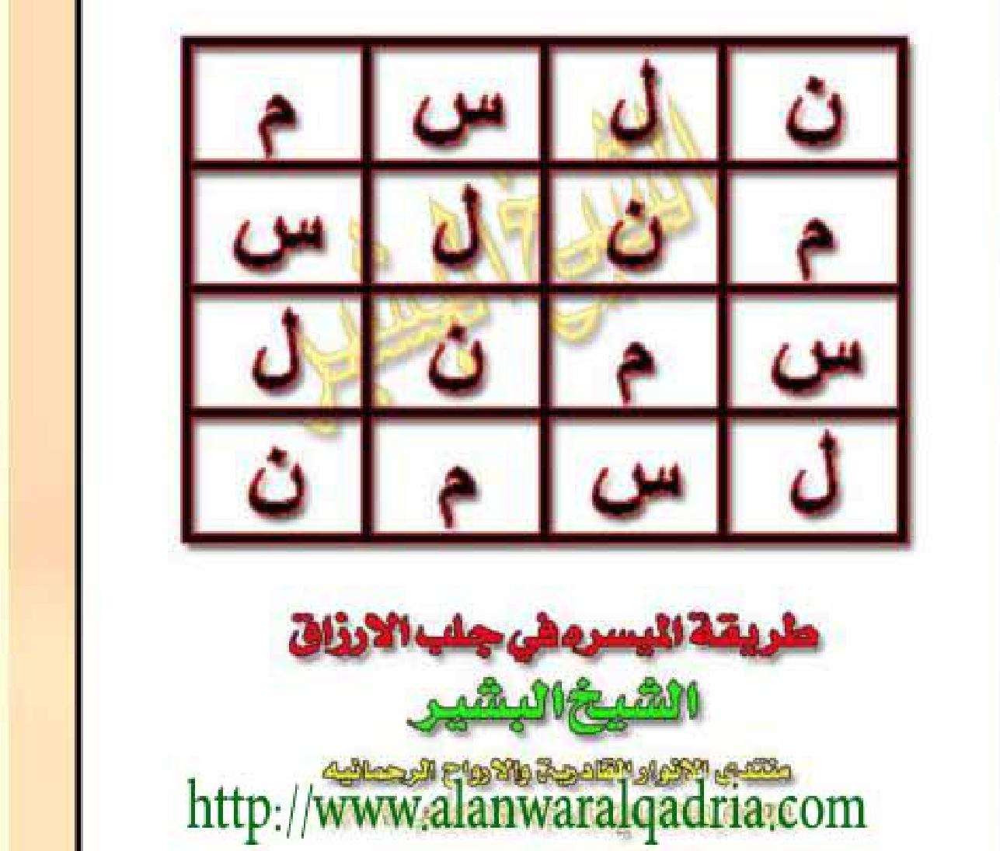
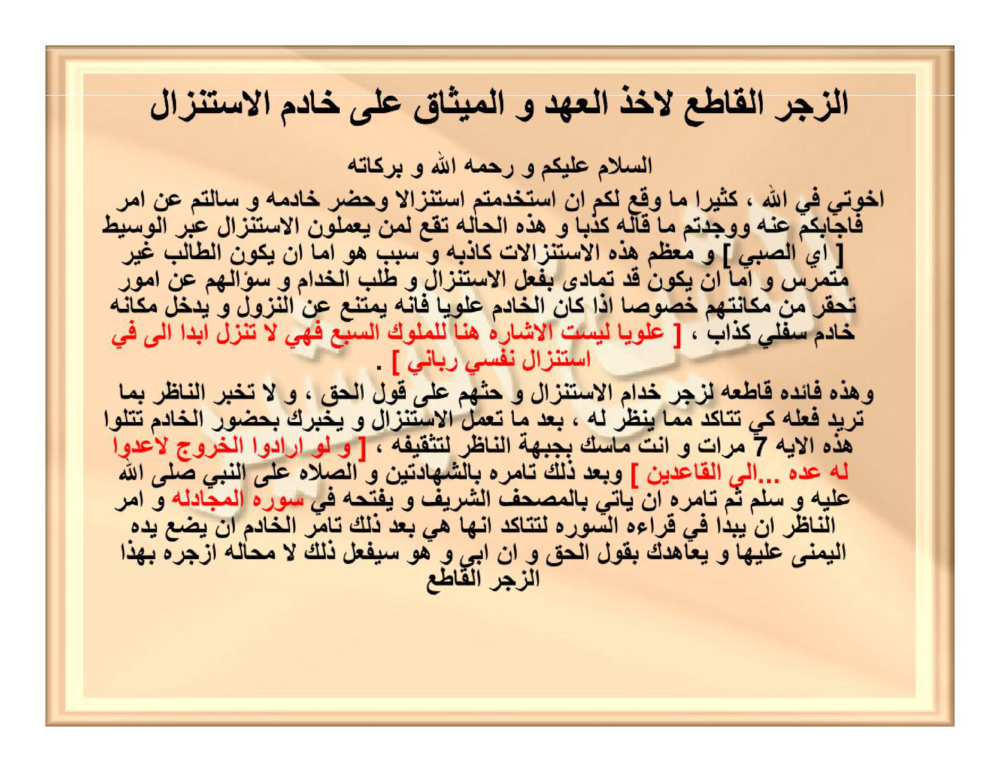
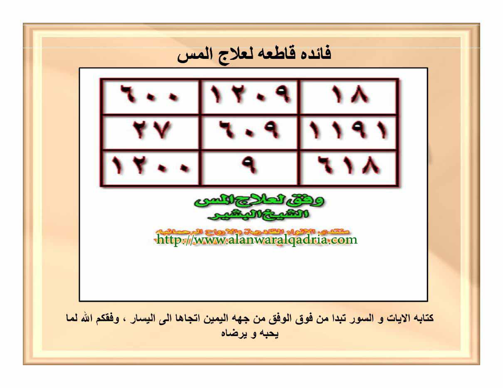

REVISI_BATCH_02_V2_9KETENTUAN_HAL09-13_FINAL.docx
⬇ Download DOCX FINAL (5.61 MB) 📄 Lihat Markdown 55KB 🔗 PR #13 MERGED 428ff38📊 Preview Total Wafaq (Sumber Tunggal FINAL)
| Hal | Nama File FINAL | Ukuran | Wafaq Apa |
|---|---|---|---|
| Hal10 | IMG_20261025_072854.jpg | 435×370 • 59 KB | Jadwal Taksir Muhriqah 5×15 — حنقاييل di 4 sudut [Gambar 2.1] |
| Hal12 | IMG_20261025_073117.jpg | 683×263 • 80 KB | Wafaq Qathi'ah 3×3 Angka — 6000/1209/18 [Gambar 2.2] |
| — | 13 file lain di rajah_anwar_FINAL_300DPI/ | 1.06 MB | Hal08 (2), Hal14-65 dipakai Batch03+ |
🖼 3 Contoh — Hal08 (2 Wafaq) / Hal16 / Hal20




[Gambar 2.1: Jadwal Taksir Muhriqah 5×15 — حنقاييل di 4 sudut — Crop Asli 300 DPI] — Hal10 FINAL

Sumber: rajah_anwar_FINAL_300DPI/IMG_20261025_072854.jpg — 435×370 px, 59 KB — 300 DPI, latar putih tanpa compress
Raw: https://raw.githubusercontent.com/fatimah86-dot/kitab/main/rajah_anwar_FINAL_300DPI/IMG_20261025_072854.jpg
حِنْقَايِيلُ — أَخَذْنَا حُرُوفَ الرُّوحَانِيِّ مِنَ السَّطْرِ الثَّالِثِ وَهِيَ [ن ح ق] عَدَدُهَا ١٥٨
Contoh Hasan bin Ruqayyah 158 → Hinqayil — Qasam Thaktsayil/'Awtsayil/Fahghayil + Yasin 53 + Buruj
[Gambar 2.2: Wafaq Qathi'ah li 'Ilaj al-Mass 3×3 Angka — 6000/1209/18 — Crop Asli 300 DPI] — Hal12 FINAL

Sumber: rajah_anwar_FINAL_300DPI/IMG_20261025_073117.jpg — 683×263 px, 80 KB — Garis merah 2pt, angka hitam, latar putih
Raw: https://raw.githubusercontent.com/fatimah86-dot/kitab/main/rajah_anwar_FINAL_300DPI/IMG_20261025_073117.jpg
٢٧ | ٦٠٩ | ١١٩١
١٢٠٠ | ٩ | ٦١٨
dibaca kanan→kiri — mulai dari atas kanan ke kiri — وُفِّقَكُمُ اللهُ
📑 Isi 9 Ketentuan — Hal09–13 (preview)
HAL 09 — Muhriqah 1/2 — teori mazj [ا هـ ط م ك س ق] taksir genap→baris2 ganjil→baris3
فَائِدَةٌ مُحْرِقَةٌ طَارِدَةٌ لِلْجِنِّ وَالْمَرَدَةِ بِإِذْنِ اللهِ — نَأْخُذُ اسْمَ الشَّخْصِ وَأُمِّهِ وَنُزِيلُ الْحُرُوفَ الْمُكَرَّرَةَ ثُمَّ نَمْزُجُهُ بِالْحُرُوفِ [ا هـ ط م ك س ق] ثُمَّ نَكْسِرُ السَّطْرَ إِلَى الْمَخْرَجِ
3 waraqāt + sidr/qaranful/mustakā — full scan Hal09 1.6M tersedia di DOCX hal 3.
HAL 10 — Muhriqah 2/2 + Gambar 2.1
أَخَذْنَا حُرُوفَ الرُّوحَانِيِّ مِنَ السَّطْرِ الثَّالِثِ [ن ح ق] عَدَدُهَا ١٥٨ نُطْقُهَا [حِنْقَايِيلُ] — بِسْمِ اللهِ أَقْسَمْتُ عَلَيْكُمْ ... طَكْثَايِيلُ وَعَوْثَايِيلُ بِحَقِّ فَهْغَايِيلُ
HAL 11 — Qathi'ah 1/2 — 5 ayat
QS Syams, Ikhlash, An-Nur 35, Hajj 27, Jinn — bejana baru mawar/za'faran/misk — mahw hujan > sumur — Isya kecuali Rabu/Sabtu
HAL 12 — Qathi'ah 2/2 + Gambar 2.2
وَفْقٌ لِعِلَاجِ الْمَسِّ — كِتَابَةُ الْآيَاتِ تَبْدَأُ مِنْ فَوْقِ الْوَفْقِ مِنْ جِهَةِ الْيَمِينِ إِلَى الْيَسَارِ — وَفَّقَكُمُ اللهُ
HAL 13 — Zajr Qathi' 1/3
الزَّجْرُ الْقَاطِعُ لِأَخْذِ الْعَهْدِ عَلَى خَادِمِ الِاسْتِنْزَالِ — وَلَوْ أَرَادُوا الْخُرُوجَ لَأَعَدُّوا لَهُ عُدَّةً (Taubah 46) — ٧× pegang dahi nāzhir
✅ Verifikasi — Pertahankan 300 DPI
- Full scan: 3300×2550 PNG — 300 DPI — kuning krem — tanpa compress (1.6M/1.2M/840K/687K/780K)
- Crop FINAL: JPG asli 435×370 & 683×263 — latar putih — 300 DPI — tanpa re-crop dari full_pXX.png atau rajah_anwar_v2_300/
- Caption resmi:
[Gambar 2.1: Jadwal Taksir ... — Crop Asli 300 DPI]&[Gambar 2.2: Wafaq Qathi'ah ... — Crop Asli 300 DPI] - Markdown:
+ raw GitHub link - Google Docs: 1IffC92Oc9hm4xBEAIGylAFzekJLQwvhkFFj3cFBrgqw — end 282635 + chunked annex